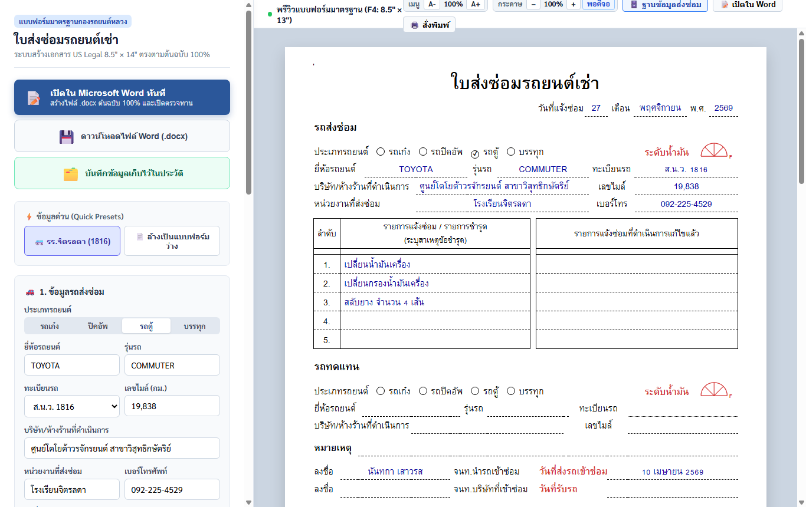
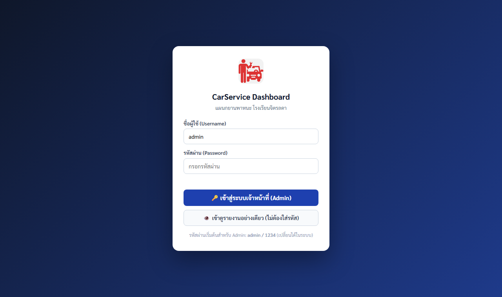
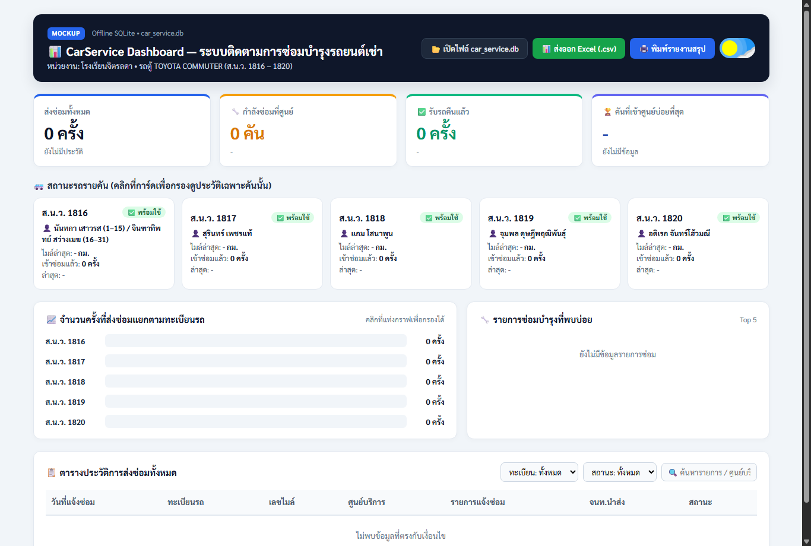

คู่มือการใช้งานระบบใบส่งซ่อมรถยนต์เช่า
แผนกยานพาหนะ โรงเรียนจิตรลดา • มาตรฐานกองรถยนต์หลวง (กระดาษ F4: 8.5 × 13 นิ้ว)
Standalone Offline Edition v1.0
1. ภาพรวมของระบบ (ประกอบด้วย 2 โปรแกรม)
ระบบถูกออกแบบให้ทำงานแบบ Stand Alone (ไม่ต้องเชื่อมต่ออินเทอร์เน็ต และไม่ต้องติดตั้ง Python หรือฟอนต์เพิ่มเติม) โดยแบ่งออกเป็น 2 โปรแกรมที่ใช้งานฐานข้อมูล car_service.db ร่วมกัน:
🚐 1. CarService_RepairOrder.exe
ใช้สำหรับกรอกข้อมูลออกใบส่งซ่อมรถยนต์เช่า, แนบรูปภาพหน้า 2+, สั่งพิมพ์กระดาษ F4 หรือส่งออกไฟล์ Microsoft Word (.docx) ต้นฉบับ 100%
📊 2. CarService_Dashboard.exe
ใช้สำหรับแผนกยานพาหนะ/ผู้บริหาร เปิดดูภาพรวมการซ่อม, สถานะรถรายคัน, กราฟสรุป, ดูรูปแนบย้อนหลัง, อัปเดตสถานะรับรถคืน และส่งออก Excel
2. วิธีการติดตั้งบนเครื่องคอมพิวเตอร์
- สร้างโฟลเดอร์ใหม่ 1 โฟลเดอร์บนเครื่องปลายทาง เช่น
D:\CarService\
- นำไฟล์
CarService_RepairOrder.exe และ CarService_Dashboard.exe มาวางไว้ในโฟลเดอร์เดียวกัน
- (แนะนำ) คลิกขวาที่ไฟล์
.exe ทั้ง 2 ตัว ➔ Send to ➔ Desktop (create shortcut) เพื่อให้เปิดใช้งานจากหน้าจอได้สะดวก
📁 ไฟล์ที่ระบบจะสร้างให้อัตโนมัติเมื่อเริ่มใช้งาน (ห้ามลบ):
• car_service.db — ไฟล์ฐานข้อมูล SQLite เก็บประวัติการส่งซ่อมและรหัสผ่านทั้งหมด
• saved_photos\ — โฟลเดอร์เก็บรูปภาพแนบหน้า 2 ของแต่ละใบส่งซ่อม
3. ตารางข้อมูลรถและพนักงานขับรถที่ตั้งค่าอัตโนมัติไว้แล้ว
เมื่อเลือกทะเบียนรถจาก Dropdown ระบบจะกรอกชื่อเจ้าหน้าที่นำรถเข้าซ่อมให้อัตโนมัติ (สามารถพิมพ์แก้ไขเองได้หากมีการแทนเวร):
| ทะเบียนรถ |
ยี่ห้อ / รุ่น |
เจ้าหน้าที่ขับรถประจำคัน (Auto-Fill) |
| ส.น.ว. 1816 |
TOYOTA COMMUTER |
วันที่ 1–15: นันทกา เสาวรส / วันที่ 16–31: จินฑาทิพทย์ สว่างเมฆ |
| ส.น.ว. 1817 |
TOYOTA COMMUTER |
สุรินทร์ เพชรแท้ |
| ส.น.ว. 1818 |
TOYOTA COMMUTER |
แกม โสนาพูน |
| ส.น.ว. 1819 |
TOYOTA COMMUTER |
จุมพล ดุษฎีพฤฒิพันธุ์ |
| ส.น.ว. 1820 |
TOYOTA COMMUTER |
อดิเรก จันทร์โฮ้วมณี |
* หน่วยงานที่ส่งซ่อมถูกตั้งค่าเริ่มต้นไว้ที่ โรงเรียนจิตรลดา และเบอร์โทรศัพท์ 092-225-4529 ตลอดการใช้งาน
4. วิธีใช้งานโปรแกรมออกใบส่งซ่อม (CarService_RepairOrder.exe)
ขั้นตอนที่ 1: เปิดโปรแกรม
- ดับเบิลคลิกที่
CarService_RepairOrder.exe
- จะมีหน้าต่างจอดำขึ้นมา และเบราว์เซอร์ (Chrome/Edge) จะเปิดหน้าเว็บ
http://localhost:8085 ขึ้นมาอัตโนมัติ
⚠️ ข้อควรจำ: ห้ามปิดหน้าต่างจอดำในระหว่างที่กำลังใช้งานโปรแกรม (สามารถย่อลง Taskbar ไว้ได้ และค่อยกดปิดเมื่อใช้งานเสร็จแล้ว)

ภาพที่ 1: หน้าจอโปรแกรมออกใบส่งซ่อม (แถบกรอกข้อมูลด้านซ้าย + พรีวิวใบส่งซ่อมขนาด F4 ด้านขวา)
ขั้นตอนที่ 2: กรอกข้อมูลใบส่งซ่อม (แถบด้านซ้าย)
- ปุ่มข้อมูลด่วน: กด
📄 ล้างเป็นแบบฟอร์มว่าง เพื่อเคลียร์ข้อมูลเดิมทั้งหมด (ชื่อโรงเรียนจิตรลดาและเบอร์โทรจะยังคงอยู่ให้)
- ส่วนที่ 1 (ข้อมูลรถ): เลือกทะเบียนรถ
ส.น.ว. 1816–1820, กรอกเลขไมล์, เลือกศูนย์บริการ และเลือกวันที่แจ้งซ่อม
- ส่วนที่ 2 (รายการแจ้งซ่อม 1–5): พิมพ์รายการชำรุด หรือกดปุ่มแท็กด่วน เช่น
+ น้ำมันเครื่อง, + กรองน้ำมันเครื่อง, + สลับยาง 4 เส้น
- ส่วนที่ 3 (รถทดแทน): ติ๊กถูก
มีรถทดแทน เฉพาะกรณีที่ศูนย์บริการมีรถทดแทนให้
- ส่วนที่ 4 (เจ้าหน้าที่ & วันที่ส่งรถ): เลือก วันที่ส่งรถเข้าซ่อม จากปฏิทิน (สำหรับทะเบียน 1816 ชื่อคนขับจะสลับตามวันที่ 1–15 / 16–31 ให้อัตโนมัติ)
- ส่วนที่ 5 (แนบรูปภาพหน้า 2+): กดกล่อง
➕ คลิกเลือกรูปภาพ สามารถคลุมเลือกทีเดียว 5–6 รูป (หรือมากกว่า) ได้เลย ระบบจะจัดเรียงเป็นตาราง 2 คอลัมน์ลงหน้า 2 ให้อัตโนมัติ และสามารถพิมพ์คำอธิบายใต้ภาพแต่ละรูปได้
ขั้นตอนที่ 3: การสั่งพิมพ์และส่งออกเอกสาร (เลือกใช้ได้ 2 วิธี)
| ปุ่มคำสั่ง |
การใช้งานและข้อแนะนำ |
📝 เปิดใน Microsoft Word ทันที
(แนะนำ — เหมือนต้นฉบับ 100%) |
ระบบจะบันทึกข้อมูลลงฐานข้อมูล สร้างไฟล์ Word (.docx) ขนาด F4 พร้อมรูปหน้า 2 และเปิดโปรแกรม Microsoft Word ขึ้นมาให้สั่งพิมพ์ทันที |
| 💾 ดาวน์โหลดไฟล์ Word (.docx) |
บันทึกไฟล์ Word ลงเครื่องเพื่อส่งต่อหรือเก็บสำเนา |
| 🖨️ สั่งพิมพ์ผ่านเบราว์เซอร์ |
ในหน้าต่างพิมพ์ของ Chrome/Edge ให้ตั้งค่าขนาดกระดาษเป็น F4 / Folio (8.5×13") และ เอาติ๊กถูก "ส่วนหัวและส่วนท้าย" ออก |
💡 เคล็ดลับสำหรับจอคอมพิวเตอร์ขนาดใหญ่ (2K / 4K):
หากตัวอักษรดูเล็กเกินไป สามารถกดปุ่มปรับขนาด เมนู (A- / A+) และซูม กระดาษ (− / + / พอดีจอ) ที่แถบด้านบนได้ โดยระบบจะจำค่าไว้เฉพาะเครื่องนั้น และ ไม่กระทบขนาดตอนสั่งพิมพ์จริง ครับ
5. วิธีใช้งานโปรแกรม Dashboard แผนกยานพาหนะ (CarService_Dashboard.exe)
ดับเบิลคลิกที่ CarService_Dashboard.exe ระบบจะเปิดหน้าเว็บ http://localhost:8086 ขึ้นมาอัตโนมัติ (สามารถเปิดพร้อมกับโปรแกรมออกใบส่งซ่อมได้โดยไม่ชนกัน)
การเข้าสู่ระบบ (Login) แบ่งเป็น 2 สิทธิ์:
🔑 โหมดเจ้าหน้าที่ (Admin)
• ชื่อผู้ใช้: admin / รหัสผ่านเริ่มต้น: 1234
• ดูรายงาน, อัปเดตสถานะงานซ่อม, ลบประวัติ, ส่งออก Excel และเปลี่ยนรหัสผ่านได้
👁️ โหมดดูรายงานอย่างเดียว
• กดปุ่ม เข้าดูรายงานอย่างเดียว ได้เลยไม่ต้องใส่รหัส
• ดูกราฟ, ดูสถานะรถ, ดูรูปแนบ, ส่งออก Excel และพิมพ์รายงานได้ (แก้/ลบข้อมูลไม่ได้)
🔒 แนะนำความปลอดภัย: หลังติดตั้งเสร็จ ควรเข้าสู่ระบบด้วย admin / 1234 แล้วกดปุ่ม 🔑 รหัสผ่าน ที่แถบด้านบนเพื่อเปลี่ยนเป็นรหัสผ่านเฉพาะของแผนกยานพาหนะทันที

ภาพที่ 2: หน้าจอเข้าสู่ระบบ (เลือกเข้าสู่ระบบ Admin หรือกดเข้าดูรายงานอย่างเดียวโดยไม่ต้องใส่รหัส)

ภาพที่ 3: หน้าหลัก Dashboard แสดงการ์ดสถานะรถรายคัน ส.น.ว. 1816–1820, กราฟสรุป, ตารางค้นหา และปุ่มส่งออก Excel